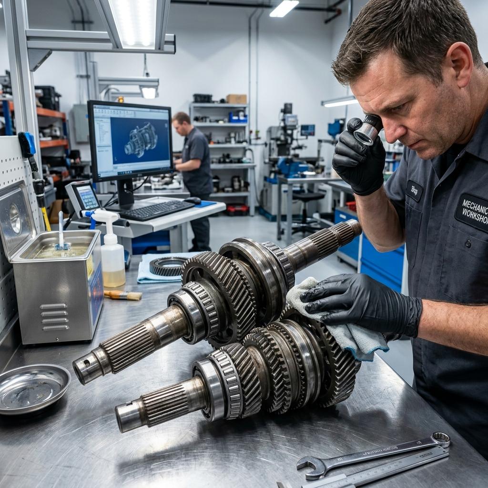
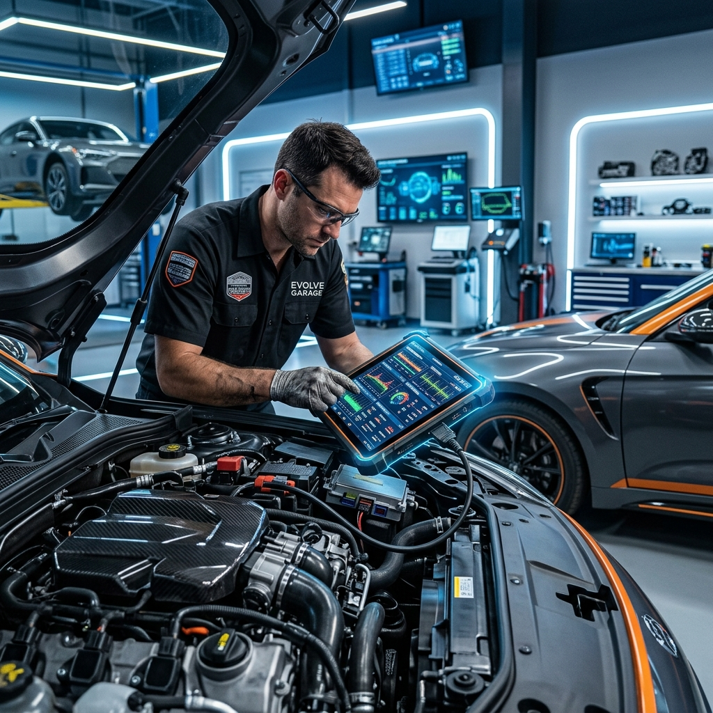
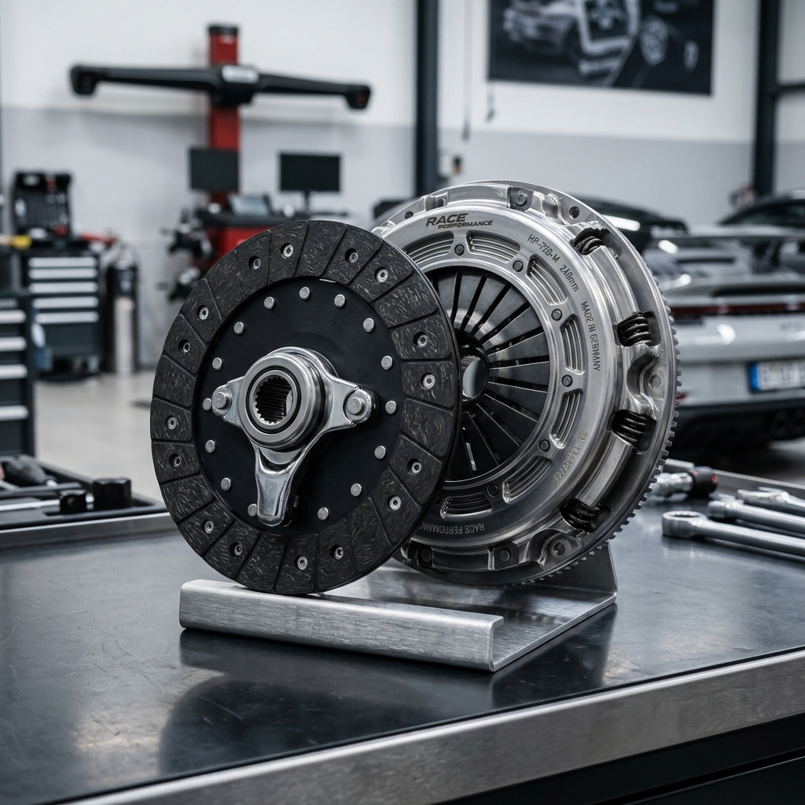

Our Specialized Services
Precision engineering and master-tier craftsmanship for every transmission type.

Full Transmission Rebuilds
Our rebuild process is exhaustive. We completely disassemble your transmission, clean every component ultrasonically, and replace all soft parts (seals, clutches, gaskets) with premium OEM or better-than-OEM components.
Each rebuild is dyno-tested to ensure factory-spec performance before being reinstalled in your vehicle.
- OEM Internals
- Dyno Tested
- 36-Mo Warranty
- Mobile Tracking
Precision Electronic Diagnostics
Modern transmissions are controlled by complex computers. Our master technicians use aerospace-grade diagnostic equipment to interface directly with your vehicle's TCM (Transmission Control Module).
We identify solenoid failures, sensor errors, and hydraulic pressure issues with 100% accuracy, often saving you from unnecessary major repairs.
Run Preliminary Estimate

Clutch Repair & Performance Upgrades
From standard manual clutch replacements to high-performance dual-clutch system calibrations, we handle the most demanding power-transfer systems.
We also offer heavy-duty towing kits and racing-spec upgrades for enthusiasts who demand more from their drivetrains.
Transmission Warning Signs
Don't wait for a total failure. If you notice these signs, book a diagnostic today.
Unusual Noises
Whining, clunking, or humming sounds when shifting or in neutral are early indicators of internal gear or bearing wear.
Slipping Gears
If your engine revs but the car doesn't accelerate properly, or if it pops out of gear, your transmission needs immediate attention.
Fluid Leaks
Transmission fluid is typically bright red. If you see pinkish or red fluid on your driveway, you have a leak that could lead to overheating.
Frequently Asked Questions
How long does a full transmission rebuild take?
Typically, a standard rebuild takes between 3 to 5 business days. This includes disassembly, parts ordering, ultrasonic cleaning, reassembly, and rigorous dyno testing.
Do you offer a warranty on mobile repairs?
Yes! All our rebuilds come with a 36-month/36,000-mile nationwide warranty. Standard repairs are covered for 12 months/12,000 miles.
Can all transmissions be fixed on-site?
While we perform 80% of diagnostics and minor repairs (like solenoid or sensor replacements) on-site, major rebuilds usually require the precision of our specialized clean-room facility.